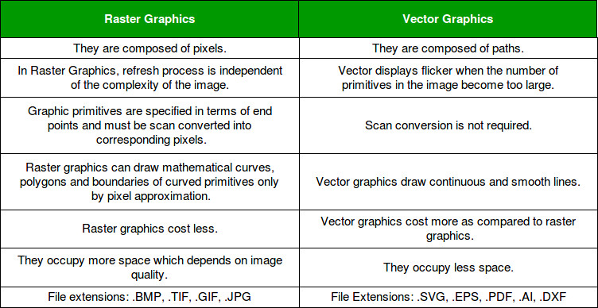
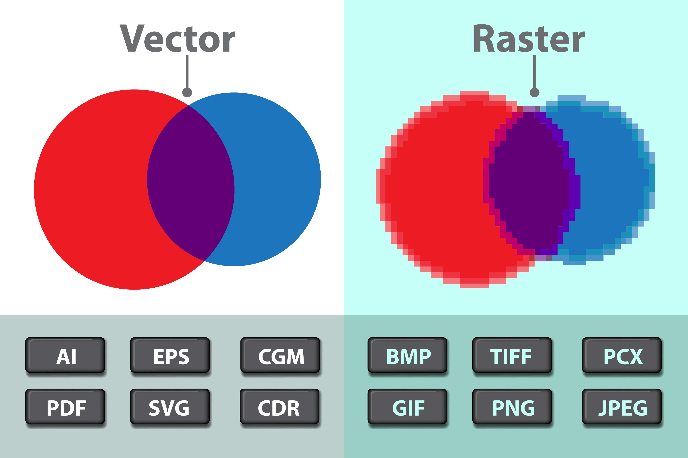
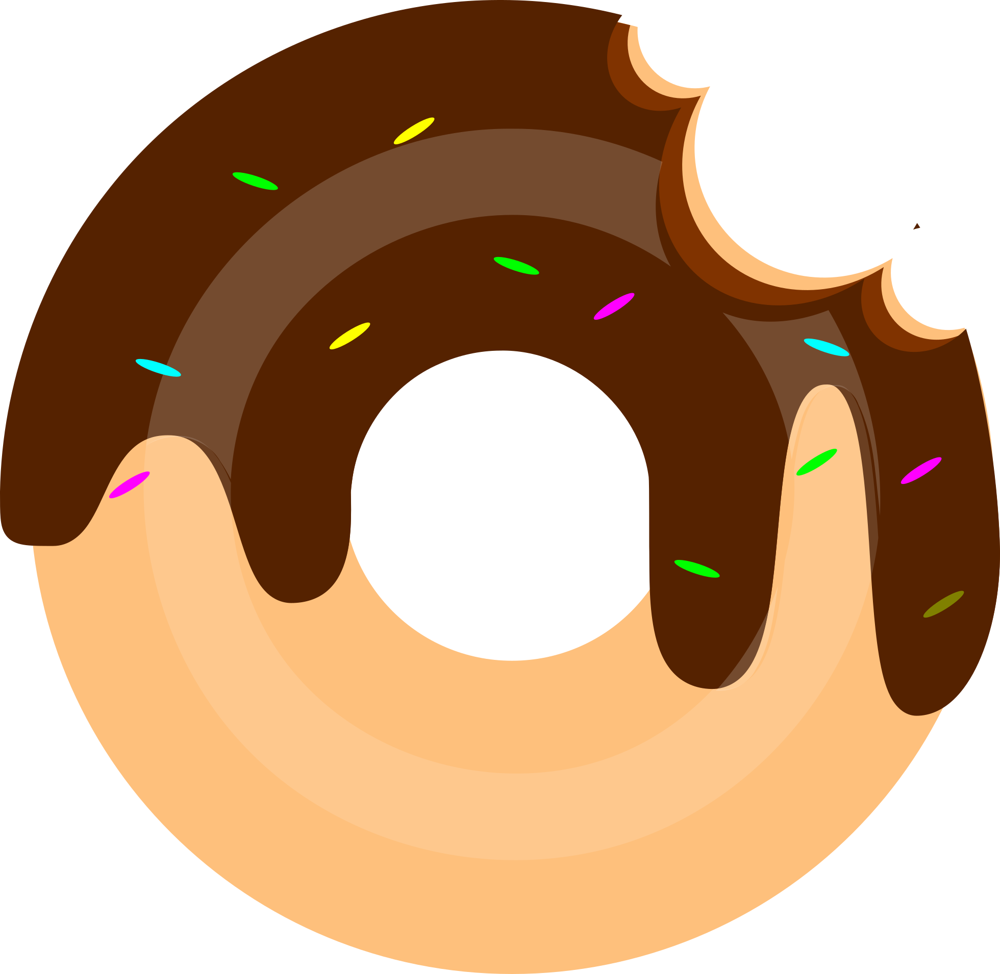
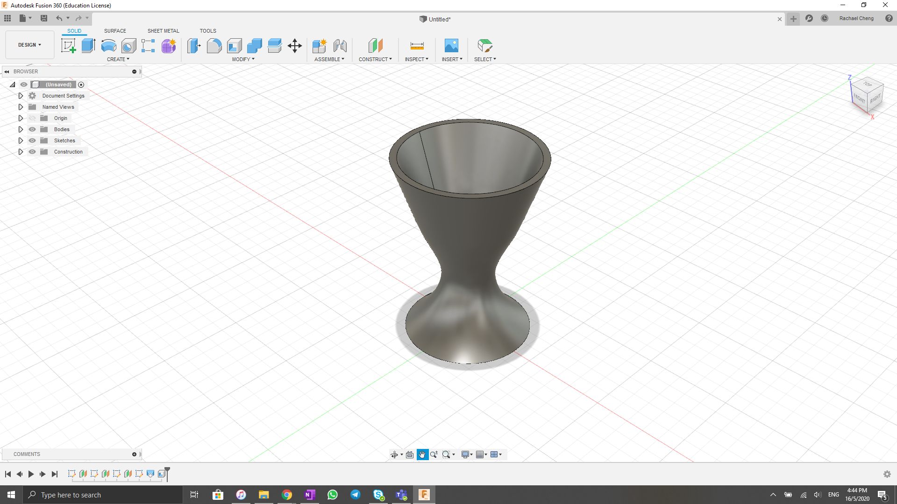
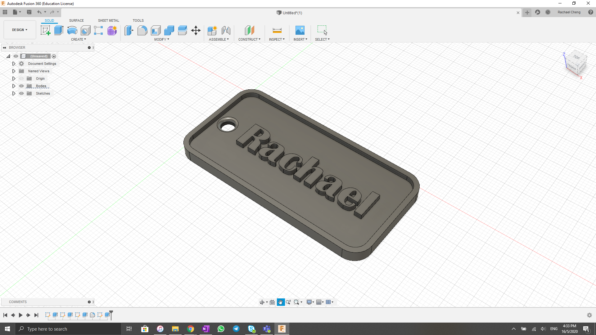
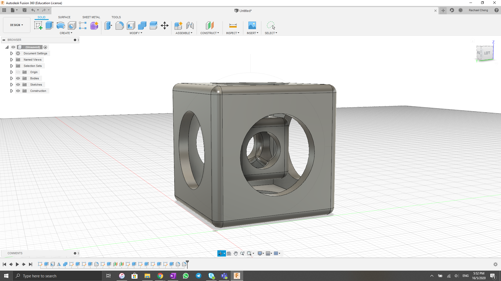

Raster VS Vector
Pixels In Computer graphics a pixel, dots, or picture element is a physical point in a picture. A pixel is simply the smallest addressable element of a picture represented on a screen.
 Link to website of table GIMP Raster
I went on YouTube for some help with GIMP, photo editing was more complicated than I thought it was. I needed to start from the basics. I chanced upon this chanel called TechGumbo where he posted a short video "How to use GIMP (beginners guide)" where the though how to apply layers, add text, add shapes, apply colours (bucket fill, gradient) as well as scale an image.
After following his very simplified tutorial, I created the following picture.
This is the video. (Use it Rach you need it)
When I have time I will play around more with GIMP and upload it here!
Inkscape Vector
Similar to GIMP, I went onto YouTube for some video tutorial for this software. There is this chanel called Logos By Nick, the designs looked relatively simplet to follow, So I followed one of his tutorial for a Vector Donut. This tutorial used the functions of, editing nodes, paths, colours, shapes, sizes as well as layers.
This is my end product
Link to Video, useful chanel
Fusion360 3D Designs
Fusion360 was available for use as we had a student account. With this platform, there were many things that we were able to create. For 3D drawings it is really useful as we will be using it for 3D printing as well as laser cutting designs.
A useful website I used to learn 3D drawings was from University of Warwick. It had many different tutorials each uses varity of techniques. I made 3 of those: egg cup, name tag and cube in a cube.
  Link to University of Warwick Fusion360 Tutorials